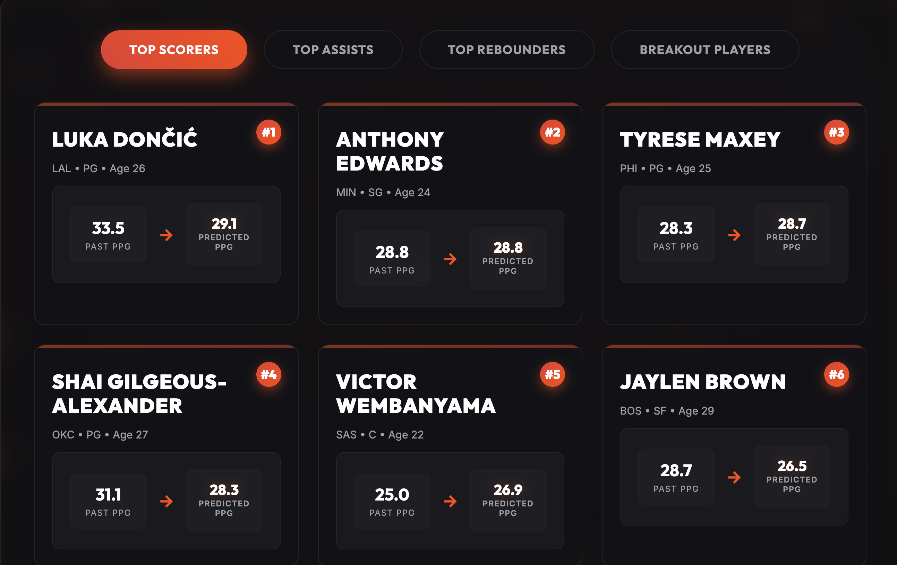

Court Vision
An NBA analytics app that forecasts how each player will perform, refreshed every day, next to live games, box scores and season stats.
Overview
Court Vision trains an XGBoost model on six seasons of player data (2020 to 2026) and predicts each player's next-season numbers. The app surfaces those predictions as a breakout radar and leaderboards, and puts them next to the things fans already check: live scores, box scores, season averages and career history.

How it works
- A scraper collects multi-season player data from Basketball Reference and NBA.com.
- The XGBoost model is trained on past seasons and checked with a walk-forward error report.
- Predictions are computed ahead of time and cached, so the API only reads them.
- A GitHub Action runs daily to refresh season stats and regenerate predictions, and finished games are archived to PostgreSQL.
- The Flask API serves stats and live games to everyone, and a preview of the predictions. The full predictions, recommendations and saved players need an account.
Decisions worth explaining
Walk-forward evaluation
The model learns from pairs of back-to-back seasons. A random train/test split would let it learn from 2025 and be tested on 2023, using information it could never have in real use. Walk-forward evaluation trains only on seasons before the one being predicted, so the reported error (MAE) is an honest estimate, and the tests check that it beats simply predicting the average.
Precompute, then serve
Running the model on every page view would make requests slow and the server expensive. Predictions only change when the data does, so they are generated once a day and served from a cache.
A public preview, enforced on the server
Signed-out visitors see the top predictions, so the product speaks for itself. Everything else is withheld by the API, not just hidden in the page: without a valid bearer token, a player's prediction comes back empty. Hiding it only in the frontend would leave the data one network request away.
